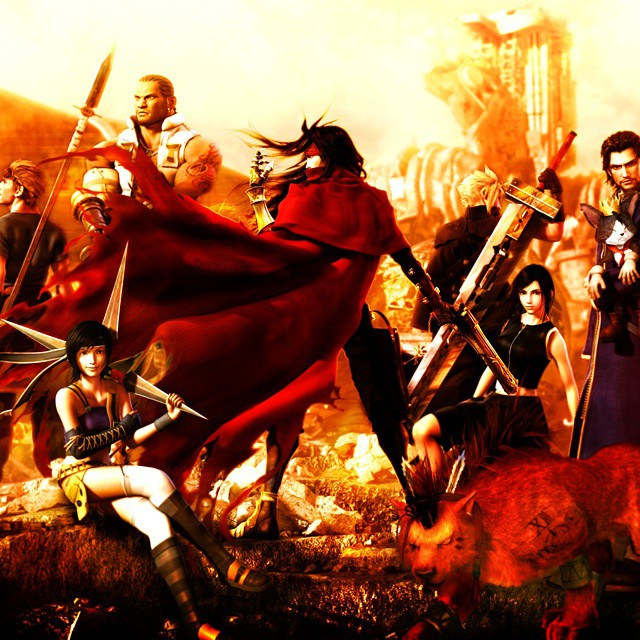

15.Resident Evil 5
Before the zombie craze of today, there was Resident Evil.One of the first zombie franchises of the modern era. Entries like this one proved
how far and relevant the series can still be especially now that zombie fever is at an all time high.
14.Final Fantasy 13
The best Final Fantasy ever made. Don't let the naysayers say any different. The one that has it all, beautiful women, incredible story
and tight gameplay form a cohesive experience. It is one of the main reasons Final Fantasy is a mainstay onto today. I mean who wants to
put up with exploration, countless talking, and story depth anyway, let's just get to the combat which
this game has a plenty.
.jpg)
13.Tomb Raider Legend
Tomb Raider at it's best. Nothing can top this one, not even Nathan Drake himself.Lara doesn't
need expensive set pieces to drive her game. All we need and ask from Tomb Raider should be
exploration, puzzle solving and her huge knockers.

12.Dirge of Cirbures: Final Fantasy 7
Being better than the legendary Final Fantasy 7 is no easy task. But screw standing around
taking turns kicking ass,and reading bland pretentious horribly translated dialogue,I'd take
running and gunning, and hearing full blown voice acting and pretty cutscenes any day. Short, sweet
and to the point, the way every game should be.

11.Dante's Inferno
Best hack and slasher of all time. Gore, naked women and more naked women,
shall I say more? Gore, gore,gore,gore,gore, nudity, nudity,nudity,nudity, shall
I say more?